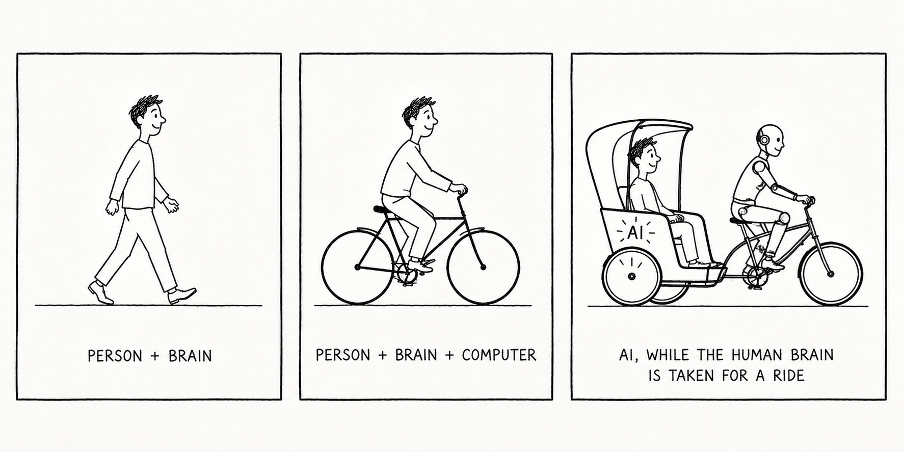

Steve Jobs liked to say that the computer was a bicycle for the mind. The metaphor has aged well, partly because it captures something specific: a bicycle doesn't replace your legs, it multiplies them. You still decide where to go. You still pedal. You just cover more ground.
The obvious question now is what AI is, in the same frame. And the answer is less obvious than it looks.

There is a reasonable case, made in a growing pile of articles, that AI is making us worse at thinking. I find some of this overstated, but if you read enough PRDs, LinkedIn posts, and product flows shipped in the last year, it is hard to argue the average output has gotten sharper. Something has flattened. The texture is gone.
At the same time, I have never been more productive as a PM. I can analyze data, write code, and produce design artifacts at a speed that would have seemed unreasonable two years ago. Both of these things are true, and the interesting question is why — and for whom.
What AI doesn't do
The part of the job AI does not do for me is talk to users. It cannot sit on a call and read a hesitation. It cannot watch someone fumble through onboarding and notice the moment they give up. That work is still mine.
What has changed is how much of it I get to do.
Previously, maybe 60% of my time on any given hunch was spent pulling and reconciling quantitative data. That cost has collapsed — not to zero, but close enough that the binding constraint on my week is now something else entirely. The freed time has gone almost entirely into qualitative work: session replays, interviews, watching behavior from first touch. The compounding effect is not that I ship faster. It is that I arrive at each decision with more at-bats with actual users, which is a different thing.
This is, I think, the part of the AI-and-productivity conversation that gets least attention. The interesting gain is not speed. It is what you do with the time speed gives back.
Which brings us to the second version of the metaphor.

The e-bike or the rickshaw
The optimistic read is the e-bike. You are still pedaling, still steering, still making the judgment calls, but the hills are smaller and the distances are longer. The rider is doing more, not less.
The other read is the rickshaw in the first cartoon — you are sitting in the cart, AI is pedaling, and you don't notice for a while that the direction is wrong. The output looks like productivity. It mostly isn't.
Both of these are happening, often in the same team, sometimes in the same person on different days. Which one becomes the default is partly a tooling question and largely a taste question. Knowing how to use AI will be table stakes fairly soon, in the way that knowing how to use a spreadsheet became table stakes a generation ago. The differentiator after that is judgment about what to point it at, and the discernment to notice when the output is wrong.